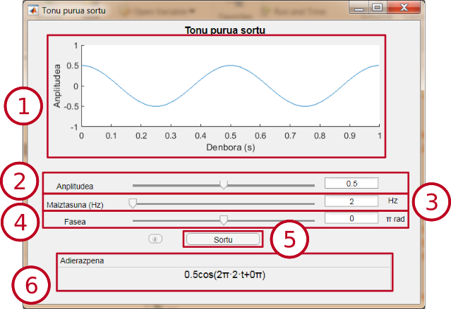
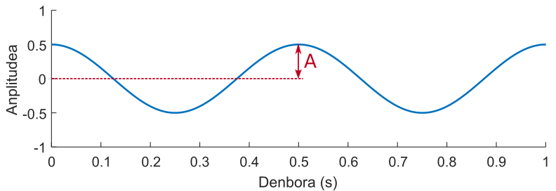

Tonu purua sortu
Modulo honek segundo bateko iraupeneko tonu puru bat sortzen du. Anplitudea, maiztasuna eta fasea hautatzea ahalbidetzen du.
Interfazea

-
Aurrebista-leihoa: Modulua sortuko duen seinalea aurreikupena erakusten du. Parametro baten balioa aldatzean eguneratzen da.
-
Amplitude-hautagailua: Kosinuaren anplitudea 0-ren eta 1-ren artean hautatzea ahalbidetzen du. Balioa kursorea mugitzen edo testu-kutxaren balioa aldatzen hautatu ahal da.
-
Maiztasun-hautagailua: Kosinuaren maiztasuna Hertz bat eta 20000 Hertzen artean hautatzea ahalbidetzen du. Balioa kursorea mugitzen edo testu-kutxaren balioa aldatzen hautatu ahal da.
-
Fase-hautagailua: Kosinuaren fasea −π y π radianen artean hautatzea ahalbidetzen du. Balioa kursorea mugitzen edo testu-kutxaren balioa aldatzen hautatu ahal da.
-
"Sortu" botoia: Bistaratze-leiho berri bat irekitzen du, hautatutako parametroekin sortutako seinale bat, segundu bateko iraupena duena, aztertzeko.
-
Adierazpena: Seinalearen adierazpen matematikoa erakusten du, hautatutako parametroekin. Parametro baten balioa aldatzean eguneratzen da.
Tonu purua
Tonu puru bat seinale sinusoide bat da, maiztasun bakarra duena. Modulu honetan sortzen da kosinu funtzioa erabiliz, eta hurrengo formularekin adierazten da:
A cos(2πft + 𝜙),
non A anplitudea, f maiztasuna eta 𝜙 fasea den.
-
Anplitudea: Seinalearen gehienezko balioa da.
|

|
| Adibide honetan anplitudea 0.5 da.
|
-
Maiztasuna: Denbora tarte batean seinale-ziklo oso bat zebat aldiz errepikatzen den adierazten du. Hertzetan neurrituta, segundu batean seinale-ziklo baten errepikapen kopurua.

|
| Adibide honetan maiztasuna 2 Hz-ekoa da.
|
-
Fasea:Kosinuaren desplazamendua. Radianetan neurtzen da, seinale-ziklo oso bat 2π radian izanez.

|
| Adibide honetan seinalea ziklo ¼-a desplazatuta dago. Beraz, fasea π/2 rad-ekoa da.
|